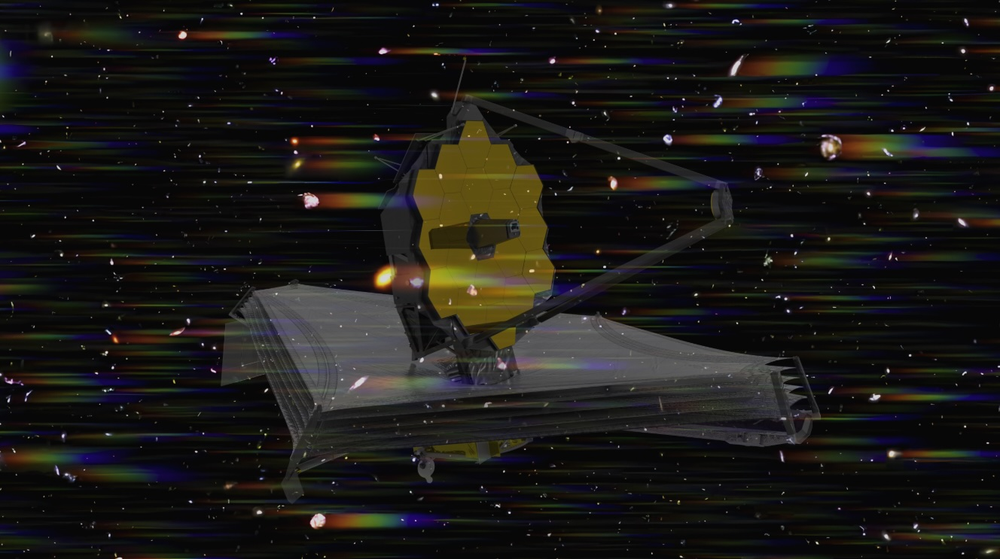
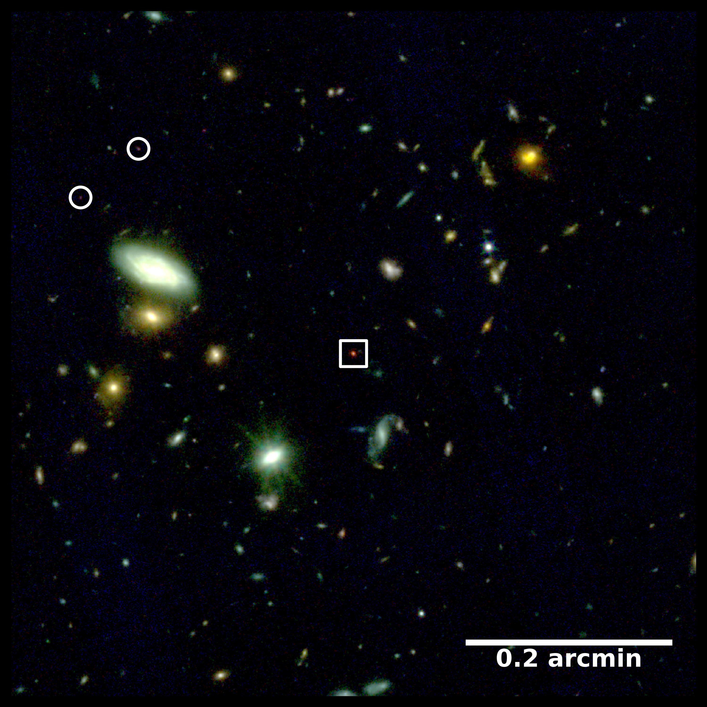
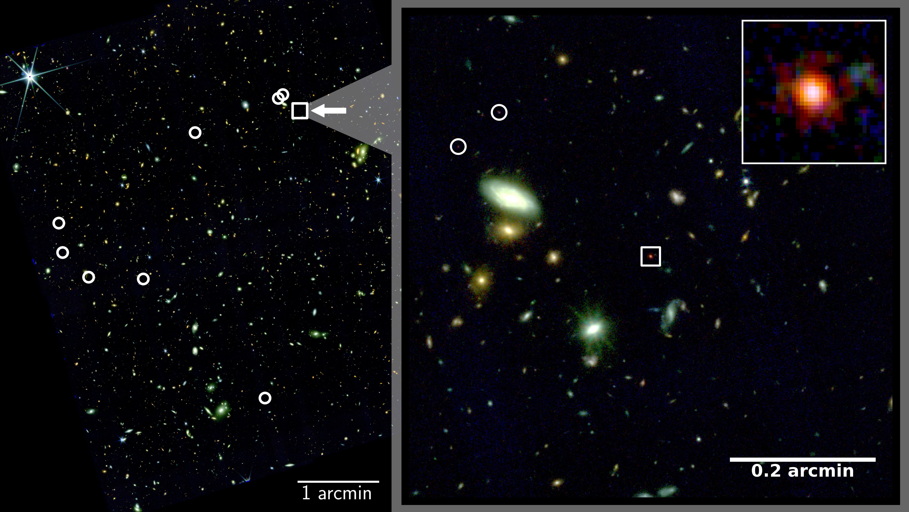

Deciphering the Cosmic Dawn with JWST
Exploring the Early Universe with JWST
The James Webb Space Telescope (JWST) opens up the near- and mid-infrared sky unhindered by the Earth's atmosphere. It's unprecedented capabilities are revolutionizing our understanding of distant galaxies and lower mass supermassive black holes, accreting as AGN.

Demographics in the COSMOS field
The JWST treasury program "GO 5734 COSMOS-3D" (PI: K. Kakiichi) , is the largest approved JWST program to date. Over an area of 0.33 deg2, this program will provide the most comprehensive census of galaxies and active galactic nuclei at z=7-9. My group is part of the COSMOS-3D collaboration and my PhD student Katharina Jurk is currently working on the broad-line AGN luminosity function to understand the population of accreting SMBHs and Little Red Dots in comparison with the general galaxy population.

The enigma of the Little Red Dots
Little Red Dots (LRDs) are a puzzling population of compact, red sources with broad emission lines, similar to an AGN. While their true nature is not fully understood, it is believed they host accreting SMBHs. Within the JWST program GO 2073 (PI: Hennawi), we discovered a "Little Red Dot" (LRD) at z∼7.3.

As shown in the image above, our LRD is embedded in an overdensity of eight galaxies, allowing us to calculate a first estimate of LRD-galaxy clustering. The image highlights the field around the LRD (square) with the galaxies in its vicinity (circles). Our study, published in Nature Astronomy, finds the LRD to best hosted in a similar dark matter environment as quasars at the same epoch, suggesting the possibility that LRDs could serve as "obscured" precursors to the quasar population.
With my JWST follow-up program "GO 5734" (PI: J. Schindler), we will characterise the rest-frame optical spectrum of this LRD in detail.
Relevant publications
Associated press releases: